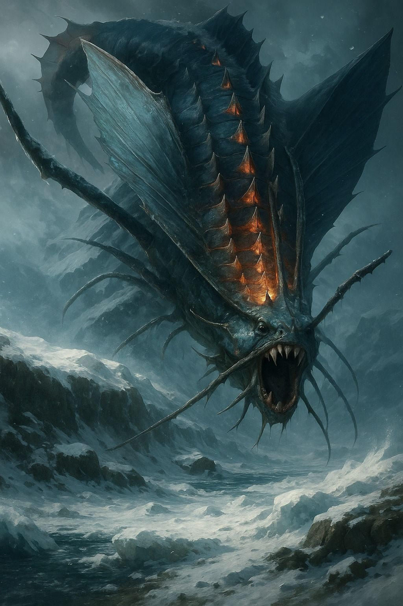

🐙 Морские твари
Морские гиганты



Тип: Существа / Морские гиганты
Опасность: Экстремально высокая
Возраст: Древние (застали создание Лэстрэла)
Описание
Морские твари — это колоссальные существа, обитающие в глубинах океанов Лэстрэла. Они представляют собой невероятную угрозу для любого, кто осмелится выйти в открытое море без должной подготовки. Для неподготовленных мореходов встреча с этими гигантами равносильна смерти: их размеры, сила и непредсказуемое поведение не оставляют шансов обычным судам.
Происхождение
Эти создания относятся к числу древнейших обитателей мира. Согласно легендам, морские твари были свидетелями самого акта творения Лэстрэла. Их существование уходит корнями в те времена, когда континенты только формировались, а магия мира еще была юной и необузданной. Именно поэтому мореходы относятся к ним не просто как к монстрам, а как к живым реликтам эпохи сотворения.
Взаимодействие
- Требуют сопровождения опытных магов или флота для безопасного пересечения вод.
- Нападения чаще всего происходят в глубоководных зонах и во время штормов.
- Некоторые культы считают их воплощением древних богов и приносят им дары.